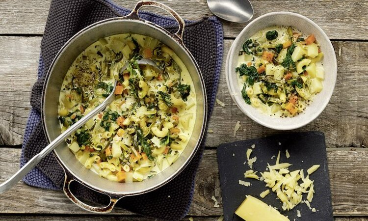
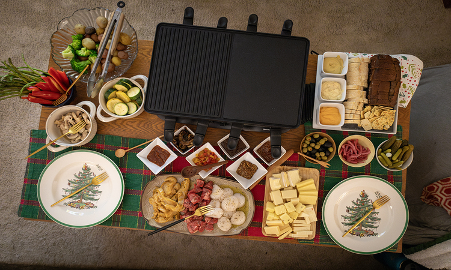

Location: Served within the hotels recommended in the hotels page.
A hearty, traditional Swiss alpine soup originating from the Fribourg region, designed to sustain shepherds during the high pasture grazing season.

Location: Can be eaten in the Gstaad Palace in the hotels page.
A traditional Swiss dish originating from the canton of Valais, consisting of melted, semi-hard cow's milk cheese scraped over boiled potatoes, pickles, and onions.